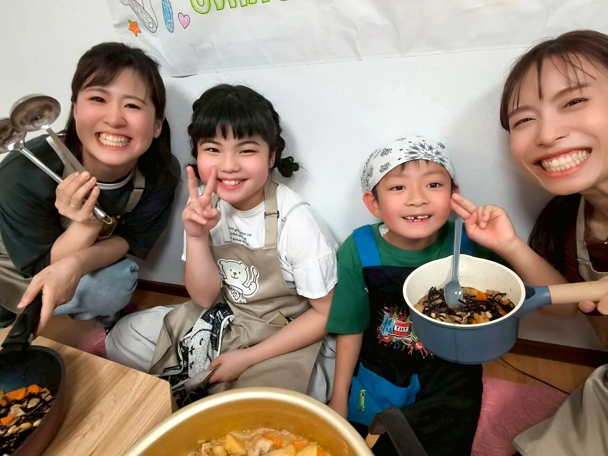

太田駅から車で約5分の一軒家教室です。
レッスンは少人数で行います。付き添いの保護者の方や、きょうだい児は和室で待つこともできます。初めての方は、参加前に気になることをLINEでご相談ください。
- 太田駅から車で約5分
- 駐車場あり
- 詳しいアクセスは公式LINEのリッチメニューから確認できます



スマイルクッキングが大切にしていること、そして私たち講師のことを知ってください。

スマイルクッキングが大切にしているのは、きれいに完成させることだけではありません。
自分で選ぶこと、やってみること、誰かのために作ること。
うまくいかなかった時も「ナイスチャレンジ！次どうしようか？」と一緒に考える時間を大切にしています。
料理を通して、子どもが「自分で決める力」を育てていく場所でありたい。
えりか先生は子どもとママの気持ちに寄り添い、まい先生は工程・手順・栄養面を支えながら、二人でレッスンをつくっています。

自身も子育てをするママとして、子どもの気持ちとママの不安の両方を受け止めながらレッスンをつくっています。
大切にしているのは、先回りしすぎず、でも放っておかない距離感。「やってみたい」と思えた瞬間を逃さず、ナイスチャレンジとして受け止めます。
ママが少し肩の力を抜いて、子どもの成長を一緒に見られる場所でありたいと思っています。

管理栄養士として保育園給食に携わり、子どもたちやママたちの日常に向き合ってきました。
食事は、完璧じゃなくて大丈夫。難しく考えすぎず、できるところから少しずつ。工程や手順、栄養面を整えながら、親子に合う形を一緒に見つけていきます。
ママが少しでも心と体を満たして笑顔でいられることが、子どもの安心にもつながると考えています。
教室の空気は、実際に来てみるのがいちばん伝わります。
ここに書いた「見守り」を、お子さんと一緒に体験してみてください。
「うちの子に合うかな？」という相談だけでも大丈夫です。